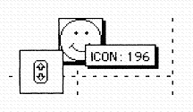
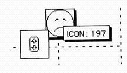
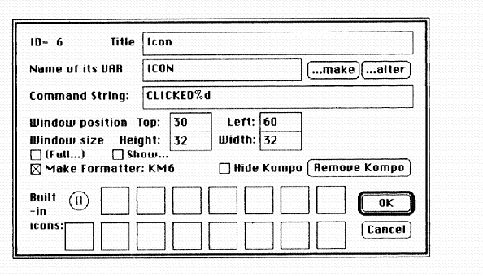

APLomb: The View through Quad-Shaped Spectacles
Vector 10:3, page 41
Introduction¶
APLomb (“APL on the Macintosh for Beginners”) is a specialised educational product for the Apple Macintosh, intended to compete with HyperCard for the easy production of science courseware (Clark [2, 3, 4, 5], Clark and Stevens [10]). It doesn’t deliver APL so much as leverage it. Its capacity to handle the plusher Macintosh features such as colour pictures, digitised sound and animation, enables it to be classified as a multimedia development system, albeit a low-end, low-cost one.
In fact the content-free part of APLomb, I-APL/Mac 1.6 (Camacho et al [1]), is freeware – only the models and the sets of components on which they are built are sold to generate revenue. These content-laden “courseware” models are ready-to-use in class without additional work, certainly without needing to program in APL or even to know the language. Several APLomb courseware titles are now available in both the UK and the USA (Clark, [6, 7, 8, 9]) and more are on the way.
The Needs Addressed by APLomb¶
A recent enquiry (Laurillard et al [11]) into the rejection by academics of much existing courseware concluded that the “not-invented-here” syndrome was not a real issue, but that lack of adaptability was. Teachers want it both ways, of course. They want to be able to modify purchased courseware to suit themselves, but to avoid having to do so. This is borne out by the author’s personal experience in higher education – there just isn’t the time to fool about with something which doesn’t work first time. APLomb is the basis for courseware that is both robust, ready-to-run, and yet adaptable. It makes no pretence to perform well outside its intended domain. It has bones to help it stand up, yet you don’t need to break its bones to bend it to your purpose. It’s a matter of putting joints in the right places, nowhere else. That’s always easier said than done.
Since few professional APLers use the Macintosh (one exception being APL.68000 users, MicroAPL [12]), it was planned that APLomb should not try to appeal to the APL community at large. It should concentrate on addressing the needs of science and mathematics teachers, especially those for whom APL in itself has no special attraction, even if this meant ignoring major APL concerns such as workspace size, fast performance and second generation functionality; at least, for the present. The door remains open to address these issues at a later date, by enhancing or replacing the I-APL engine which lies at the core. But the I-APL engine turns out in practice to be “good enough” for classroom models. Also, being freeware, it keeps the cost of the product range down and serves to permit APL to be brought to the attention of teachers who might otherwise not give it a moment’s thought.
The Perspective to be Adopted¶
APLomb is a GUI-based APL. You’ve heard of Visual BASIC ... this, loosely speaking, is Visual APL. In itself this makes it interesting to the APL community at large, especially as the way it achieves its goals runs clean contrary to the general trend: crudely mapping the (C) programmer’s GUI interface onto APL functional code.
Our main preoccupation has been with how the product looks from the end-user’s point of view, but there’s nothing especially APL-noteworthy about the result. It just looks like any other 90’s quality Macintosh product. You’d never believe the effort it took to achieve that, with a 60’s language like APL, the last word in user-interaction at a time when it was thought smart to connect a golfball-typewriter to a computer.
Of far more APL-oriented concern is a worm’s-eye view of APLomb from the perspective of the humble APL engine buried in it. A view through quad-shaped spectacles perhaps, or if you know something about I-APL, a ⎕MC-shaped keyhole. But neither ⎕ nor ⎕MC play any significant role in how APLomb communicates with the screen. Indeed the I-APL engine has nothing to do with projecting the workspace data onto the screen and knows nothing about it. APLomb looks after this aspect directly. Strictly speaking, the I-APL engine’s view of the screen is a blank wall. This has substantial benefits for the educational modelling use of APL. The language can now be restricted to its proper provenance, the succinct exposition of complex algorithms.
Direct Manipulation as User-friendly Interaction¶
Shneiderman [13] gives the name direct manipulation to the sort of human-computer interface which enables the end-user to see and alter data by interacting in a “natural” way with its graphic image on the screen. As he defines it, specifying a gun-elevation by dragging a slider, or dragging a picture of the gun barrel into the desired position, is an instance of direct manipulation, whereas typing a command: SETELEVATION 80 or typing 80 into a dialog box is not.
It follows that overtyping the text of an APL function using a full-screen editor is direct manipulation too, provided you accept that the thing you’re manipulating is the text of the function, not the function itself, which is not going to change until you quit the editor.
WYSIWYG (“what-you-see-is-what-you-get”) is a similar idea, but not quite the same. A given data item can be represented on the screen by a multitude of different graphic devices (e.g. slider, or side-view of gun), all amenable to direct manipulation, whereas WYSIWIG has the connotation of just one “real” portrayal (viz what you actually get out of a word-processor as hardcopy).
One disadvantage of direct manipulation is that although it makes things easy for the end-user, especially a pupil, it makes things hard for the developer, especially the teacher-developer. Over 90% of the time and effort to build courseware with even the better tools like HyperCard can be spent on achieving robust screen-effects, time which the hard-pressed teacher can ill-afford. Another disadvantage is more subtle. When you mouse-drag a slider on the screen, it looks so substantial (especially if it has a realistic 3-D colour effect) that you can imagine you’re altering the actual data. You’re not. You’re setting up parameters for a function which is going to be called at some future time (e.g. upon pressing “OK”) to alter the data. Even teacher-developers can be confused by this distinction, because it pops up in loads of different forms.
Kompos, Windoids and Watched Variables¶
APLomb’s goal is to make it easy for the teacher-developer to build direct manipulation models. To do so a collection of ready-made direct-manipulation devices are provided, called kompos. (“Kompo” is a neologism derived from “component” – all the best thing-names like object, component or module are employed already to mean something else.)
A typical kompo tracks the value of a single variable in the workspace (called its watched variable) and controls the contents of a windoid, a little window intended for direct manipulation. User interaction with the kompo may alter the variable in-place, but more generally triggers an APL expression to update the workspace. The windoid can be dragged around the screen by the user at any stage. It may display a graph, a clock face, an animated picture or an array of symbols, or it may present a column of labelled buttons, checkboxes or radio-buttons:

¶Three simple kompos watching the same integer variable: ICON.

¶The same three kompos instantly after clicking the upper arrowhead.
A kompo displaying a picture will project it onto the backdrop if the windoid itself is made to vanish. In this way a composite varying picture may be seamlessly built up on the backdrop. Experiments are underway with a sprite world backdrop which supports snatches of fast arcade-style animation. If you’re old enough to remember “Pong” and how influential it was in demolishing the mainframes’ pre-eminence, you’ll appreciate the urgency for educational computers to do battle with the Segas and Nintendos of this world for the attention of tender minds.
Models, Sets and Construction Kits¶
Kompos are grouped into sets which are dynamically linked as required. Kompos have unique IDs. Different sets can share the same kompos. If you install more than one set you see a menu of the intersection of their kompos. This allows model-building kits to be published containing a single set of just those kompos needed to build the models in the accompanying workbook, but several sets can be installed together to support novel models. All sets will work together. The result is no less, if no more, flexible than a LEGO or Fischer-Technik snap-together construction kit. It depends for its success on an ever-growing assortment of appealing kompos. APLomb is the system of studs on the bricks (kompos), the APL workspace is the baseboard and I-APL is the engine which drives the assembled model.
To people who make a study of educational software, model means the representation, (potentially) inside the computer, of the thing you want to teach, such as an electrical circuit or an ecosystem. There’s much interest nowadays in making the model accessible to the student, and safe to change in rewarding ways. This can confer a deeper understanding of the model’s workings than just watching it run. To APLomb, model means the APL workspace. However the two meanings come together, because with APLomb the APL code contains scarcely more than the specification of the model. All mappings from the workspace variables to the screen are handled by kompos.
Kompo Architecture¶
Is a kompo an object in the object-oriented sense? Yes and no. Yes insofar as it is an encapsulated, independently-engineered, re-usable component. No insofar as it is not controlled by sending it messages (which in C++ would happen to be calls to its internally-grouped functions called methods), but by altering the values of particular variables in the workspace. A kind of shared-variable communication channel, but without setting-up protocols.
Such an architecture suggests that anything you need to show on the screen can be handled by a kompo. If you are incautious you might start off permitting a kompo to watch any number of variables, but APLomb soon discovered the need to impose a tight structure upon this. A development tool for novice programmers like teachers needs to behave intelligently if parts of the model are missing, whether kompos themselves, or their watched variables. If you start with an empty workspace and select a kompo from the installed set(s), something intelligible must happen. If you want to make a given kompo watch a different variable, it must be obvious what field to change in whatever dialog box. If a watched variable is deleted, or )LOAD or )COPY changes the collection of variables in some way, you don’t want all the kompos to collapse in a sticky heap, but to do the sensible thing. Especially as )LOAD or )COPY can be executed secretly, like CHAIN in some dialects of BASIC, without the end-user necessarily realising what’s going on.
This is the APLomb solution to these problems. The kompos on the screen at any given time are controlled by a vector of their IDs, invariably called KMSLATE, short for “kompo-slate” (Kompos were originally called Kennel Maids, the dog was the I-APL engine, its kennel was the workspace and the slate attached told you who was currently attending it. The watched variables are left as an exercise for the reader). Kompos are selected or de-selected from a pull-down menu, which has the effect of adding or removing their IDs from KMSLATE. Loading a new workspace makes the new set of kompos spontaneously appear, but kompos common to both KMSLATEs stay on-screen without necessarily batting an eyelid. You can make a nice object-oriented data base this way, allocating one workspace per object.
So far so good. You select a kompo and it appears. But suppose it expects to see a variable called Z and there’s no such variable? Then it creates it and gives it an appropriate sample value. The kompo displays the proper text or picture for this value and you can look in the session log at the expression actually used to create Z. Needless to say you can modify and re-input this expression and watch Z change. What if you )ERASE Z? No, you don’t want the kompo to create it again spontaneously, experience shows, so it sits there displaying nothing but “Z?”. One of the operations you can perform on a kompo is to “hit” it, which you’d typically do in frustration, to persuade it to do what you think it ought to. Holding down the option key changes the cursor to a little hammer. Clicking on a kompo makes the appropriate noise, the kompo disappears and reappears just as if you’d freshly selected it. Hitting the kompo which is stuck sitting there displaying “Z?” makes it regenerate Z.
You do the same with several other kompos, then you write APL functions (or )COPY them) to map data from one collection of variables to another. That’s how to build a model. No APL code is needed to manage the GUI. It all relates to the model, and indeed that model will run under a different (non-APLomb) APL interpreter (in fact you may have got the functions from a foreign workspace in the first place). Of course you’ll have to handle the I/O yourself, and there will be variables with no relevance to the new environment, such as KMSLATE.
The Formatter Variable¶
But what about specifying the position of the kompo (i.e. its windoid)? Holding down the command key turns the cursor into a little hand, which lets you drag a kompo to a different position.
You can also change the kompo position and size by holding down the command and option keys (the cursor changes to a little eye), then clicking the kompo. This calls up a dialog box for the given kompo:

¶The dialog box to change a kompo’s attributes.
But when we reload the model at a future date, what’s to stop the kompo reappearing in its original position? We need to preserve in the workspace the information of the kompo’s whereabouts, plus any other characteristics we might change via the kompo’s dialog box.
The changed attributes are recorded in the workspace in the form of a character string variable called a formatter. The formatter is optional. If it’s present, the kompo will use it. If it’s edited or reassigned, the kompo instantly changes to keep track. For the kompo having ID=99, the formatter is invariably named KM99.
The formatter is typically generated automatically by APLomb, but only if required. One way to force it to be generated is to nail down the given kompo. Holding down the shift key as well as the option key turns the hammer into a hammer-and-nail. Clicking on a given kompo, say 99, makes the appropriate sound, but it also assigns a value to the formatter KM99, recording in the workspace the new windoid position, among other things. The formatter is not a dump of some C-structure, but a legible character string, having an opcode syntax resembling the graph-plotting format in Clark [2], but with different opcodes of course. Consulting the user guide, you can edit it reliably to alter the kompo, although there is a dialog box to do much the same thing. However the APL programmer can write functions to concatenate or assign substrings to alter a formatter (and hence its kompo) in any conceivable way. A formatter can contain any selection of opcodes. The absent ones will either be unchanged or defaulted. A formatter generated by APLomb happens to specify everything that distinguishes one kompo from another, so that if KM99 has been automatically generated:
makes kompo 66 into a carbon copy of kompo 99, whatever it was before, in the context of the current workspace.
In practice the formatter architecture means that every kompo comes ready-to-run and doing something sensible, but that any or all of its characteristics can be changed. These changes can be recorded as variables in the workspace to which they apply.
The Second Formatter¶
Some kompos make use of a second formatter. All kompos can in principle accept a second formatter, e.g. KMF15 in the case of kompo 15, but to date the only kompos making use of the second formatter are the graph-plotting kompos (ID=15, 16, 17 and 18). These expect the second formatter (if it is present) to have precisely the syntax described in Clark [2]. In its absence, they employ a built-in formatter which yields a line-graph with unlabelled axes.
Why two formatters? Originally this gave us a bad feeling, until we realised how beneficial it was. Simply extending the syntax of the first formatter to include this set of specialised graph-plotting opcodes was a programmer’s quick-fix with repercussions. The result was an architecture both cumbersome to use and inelegant to watch on the screen. In practice, given the graph plotter kompo, ID=15, the situations in which you want to change KM15 and KMF15 are quite distinct. So it pays to have independent variables governing them. You frequently want to change or restore the format of the graph displayed within the windoid (KMF15) leaving unchanged the windoid position (KM15), or vice-versa. It’s nice to do this without the window itself shuddering, which it inevitably does when the first formatter is changed.
Typically you’d copy the second formatter from a special workspace like this, since skill is needed to remember the opcodes and choose parameters for them from scratch:
FORMLIB consisting of a store of formats. On the other hand the cut-and-try turnaround is fast. Constructing the second formatter via screen controls or a dialog box is a good candidate for an APLomb model, entailing just the sort of tinkering APLers do well. Since a usable format-generator needs to be specialised and task-dependent, no pressure was felt to support format construction as part of APLomb itself. The result would have been far too general. Nevertheless, format-generators are needed. Writing one would make a good student project. If anyone comes up with one, please contact the author.
The second formatter will be used with certain new kompos too, particularly text boxes and specialised displays like clock-faces. The first formatter has opcodes which let you place integers in a set of 16 general-purpose flags. These flags can be used by the kompo in any way it sees fit, including specifying its textfont, fontsize, style etc. This is untidy and anonymous, particularly as the second formatter syntax already accommodates such things.
Watching Several Related Variables¶
One vexed question is whether to permit a kompo to watch more than one variable, to handle things like labelled tables, lines of best fit through scatterplots, and so on. A “professional” (i.e. a novice-hostile) system would have no qualms about admitting legions of variables, but contemplating this for an educational product really does give me a bad feeling, since so much hangs on assuming a unique watched variable. A second-generation APL would solve the problem with a nested array, but APLomb uses vanilla-flavoured ISO-standard I-APL for the present. Consequently APLomb holds the line: two matched variables, two matched kompos. For one thing, they don’t both flicker when you change one of them. For another, the taste of APL conveyed by APLomb’s rendering of PLANETS is blander.
Conclusion¶
Originally designed as a development system specialised to classroom models, APLomb is perhaps of wider interest to APL GUI developers, due to the way in which screen interfacing problems are addressed. The avoidance of functional APL code to interrogate and update screen artefacts, much less create them, not only restricts APL to its proper provenance, succinct model definition (which may be bad news to the APL professional) but emphasises APL’s special learning benefits in that area. It also makes material developed in and for APLomb far less platform-dependent than it would appear to be with most current APL GUI interfaces. It is all a matter of “rendering to C the things that are C’s”.
References¶
- CAMACHO, A., CHAPMAN, P., CLARK, I.A., ZIEMANN, D. (1993), I?APL/Mac 1.6 Instruction Manual. IAC/Human Interfaces, 9 Hill End, Frosterley-in-Weardale, County Durham, DL13 2SX. ISBN 1-898728-06-2.
- CLARK, I.A. (1992), Graph-plotting in I?APL/Mac 1.2. VECTOR, Vol 8, no 4, 113-118.
- CLARK, I.A. (1993), APLomb: a fashionable face talking a timeless language. Presented at: APL in Education, British APL Association, London, 11th June.
- CLARK, I.A. (1993), APLomb: User Guide. IAC/Human Interfaces.
- CLARK, I.A. (1993), Getting started building models with APLomb. IAC/Human Interfaces.
- CLARK, I.A. (1993), EPIDEMIC: Illustrates the spread of infection in a population. IAC/Human Interfaces
- CLARK, I.A. (1993), SPARKS: Test simple electrical circuits to destruction. IAC/Human Interfaces.
- CLARK, I.A. (1993), FIBONA: Breed rabbits according to Fibonacci’s Series. IAC/Human Interfaces.
- CLARK, I.A. (1993), COINS: Elementary Probability and the Law of Averages by tossing coins. IAC/Human Interfaces.
- CLARK, I.A., STEVENS, C. (1993), APLomb: a snap-together construction kit for math, science and technology software. Presented at: Kaleidoscope: Patterns of Change, 1993 Annual CUE Fall Conf., Santa Clara, Calif., USA, Oct. (CD No. 3, CUE Inc., 1210 Marina Village Pkway, Suite 100, Alameda, CA 94501.)
- LAURILLARD, D., SWIFT, B., DARBY, J., (1993), Academics’ use of courseware materials: a survey. Alt-J, Association for Learning Technology Journal, Vol.1, no. 1.
- MICROAPL, (1990), APL.68000 Level II, MicroAPL Ltd, South Bank Technopark, 90 London Road, London SE1 6LN.
- SHNEIDERMAN, B., (1987), Designing the User Interface. Addison-Wesley. ISBN 0-201-16505-8.
(webpage generated: 18 February 2006, 02:16)